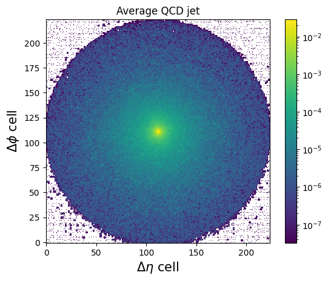

Week 5 Notebook: Deep Learning from Jet Images
Contents
Week 5 Notebook: Deep Learning from Jet Images#
Now, we’ll look at a deep learning model based on jet images
import tensorflow.keras as keras
import numpy as np
from sklearn.metrics import roc_curve, auc
import matplotlib.pyplot as plt
import uproot
import utils
2022-08-01 01:49:35.284052: W tensorflow/stream_executor/platform/default/dso_loader.cc:64] Could not load dynamic library 'libcudart.so.11.0'; dlerror: libcudart.so.11.0: cannot open shared object file: No such file or directory; LD_LIBRARY_PATH: /opt/hostedtoolcache/Python/3.7.13/x64/lib
2022-08-01 01:49:35.284080: I tensorflow/stream_executor/cuda/cudart_stub.cc:29] Ignore above cudart dlerror if you do not have a GPU set up on your machine.
import yaml
with open('definitions_image.yml') as file:
# The FullLoader parameter handles the conversion from YAML
# scalar values to Python the dictionary format
definitions = yaml.load(file, Loader=yaml.FullLoader)
features = definitions['features']
spectators = definitions['spectators']
labels = definitions['labels']
nfeatures = definitions['nfeatures']
nspectators = definitions['nspectators']
nlabels = definitions['nlabels']
Jet Images#
Let’s construct jet images [1], which are 2D image-based representations of the spatial energy spread of jets. Each pixel’s intensity is given by the sum of the transverse momentum of the particles located in that pixel.
feature_array, y, spec_array = utils.get_features_labels('root://eospublic.cern.ch//eos/opendata/cms/datascience/HiggsToBBNtupleProducerTool/HiggsToBBNTuple_HiggsToBB_QCD_RunII_13TeV_MC/train/ntuple_merged_10.root',
features, spectators, labels,
remove_mass_pt_window=False,
entry_stop=10000)
# make image
X = utils.make_image(feature_array)
print(X.shape) # image is a 4D tensor (n_samples, n_pixels_x, n_pixels_y, n_channels)
Plugin No such file or directory loading sec.protocol libXrdSeckrb5-5.so
(9375, 224, 224, 1)
from matplotlib.colors import LogNorm
plt.figure()
plt.title('Average H(bb) jet')
plt.imshow(np.mean(X[y[:,1]==1],axis=0), origin='lower', norm=LogNorm())
plt.colorbar()
plt.xlabel(r"$\Delta\eta$ cell", fontsize=15)
plt.ylabel(r"$\Delta\phi$ cell", fontsize=15)
plt.show()
plt.figure()
plt.title('Average QCD jet')
plt.imshow(np.mean(X[y[:,0]==1],axis=0), origin='lower', norm=LogNorm())
plt.colorbar()
plt.xlabel(r"$\Delta\eta$ cell", fontsize=15)
plt.ylabel(r"$\Delta\phi$ cell", fontsize=15)
plt.show()

2D Convolutional Neural Network Classifier#
from tensorflow.keras.models import Model
from tensorflow.keras.layers import Input, Dense, BatchNormalization, Conv2D, Flatten, MaxPooling2D, Activation
import tensorflow.keras.backend as K
# define dense keras model
inputs = Input(shape=(224,224,1), name = 'input')
x = BatchNormalization(name='bn_1')(inputs)
x = Conv2D(64, (3,3), padding='same', name = 'conv2d_1')(x)
x = MaxPooling2D(2,2)(x)
x = BatchNormalization(name='bn_2')(x)
x = Activation('relu')(x)
x = Conv2D(32, (3,3), padding='same', name = 'conv2d_2')(x)
x = MaxPooling2D(2,2)(x)
x = BatchNormalization(name='bn_3')(x)
x = Activation('relu')(x)
x = Conv2D(32, (3,3), padding='same', name = 'conv2d_3')(x)
x = MaxPooling2D(2,2)(x)
x = BatchNormalization(name='bn_4')(x)
x = Activation('relu')(x)
x = Flatten(name='flatten_1')(x)
x = Dense(256, name='dense_1', activation='relu')(x)
outputs = Dense(nlabels, name = 'output', activation='softmax')(x)
keras_model_conv2d = Model(inputs=inputs, outputs=outputs)
keras_model_conv2d.compile(optimizer='adam', loss='categorical_crossentropy', metrics=['accuracy'])
print(keras_model_conv2d.summary())
Model: "model"
_________________________________________________________________
Layer (type) Output Shape Param #
=================================================================
input (InputLayer) [(None, 224, 224, 1)] 0
bn_1 (BatchNormalization) (None, 224, 224, 1) 4
conv2d_1 (Conv2D) (None, 224, 224, 64) 640
max_pooling2d (MaxPooling2D (None, 112, 112, 64) 0
)
bn_2 (BatchNormalization) (None, 112, 112, 64) 256
activation (Activation) (None, 112, 112, 64) 0
conv2d_2 (Conv2D) (None, 112, 112, 32) 18464
max_pooling2d_1 (MaxPooling (None, 56, 56, 32) 0
2D)
bn_3 (BatchNormalization) (None, 56, 56, 32) 128
activation_1 (Activation) (None, 56, 56, 32) 0
conv2d_3 (Conv2D) (None, 56, 56, 32) 9248
max_pooling2d_2 (MaxPooling (None, 28, 28, 32) 0
2D)
bn_4 (BatchNormalization) (None, 28, 28, 32) 128
activation_2 (Activation) (None, 28, 28, 32) 0
flatten_1 (Flatten) (None, 25088) 0
dense_1 (Dense) (None, 256) 6422784
output (Dense) (None, 2) 514
=================================================================
Total params: 6,452,166
Trainable params: 6,451,908
Non-trainable params: 258
_________________________________________________________________
None
2022-08-01 01:50:11.120690: W tensorflow/stream_executor/platform/default/dso_loader.cc:64] Could not load dynamic library 'libcuda.so.1'; dlerror: libcuda.so.1: cannot open shared object file: No such file or directory; LD_LIBRARY_PATH: /opt/hostedtoolcache/Python/3.7.13/x64/lib
2022-08-01 01:50:11.121157: W tensorflow/stream_executor/cuda/cuda_driver.cc:269] failed call to cuInit: UNKNOWN ERROR (303)
2022-08-01 01:50:11.121758: I tensorflow/stream_executor/cuda/cuda_diagnostics.cc:156] kernel driver does not appear to be running on this host (fv-az206-555): /proc/driver/nvidia/version does not exist
2022-08-01 01:50:11.125732: I tensorflow/core/platform/cpu_feature_guard.cc:193] This TensorFlow binary is optimized with oneAPI Deep Neural Network Library (oneDNN) to use the following CPU instructions in performance-critical operations: AVX2 AVX512F FMA
To enable them in other operations, rebuild TensorFlow with the appropriate compiler flags.
# define callbacks
from tensorflow.keras.callbacks import ModelCheckpoint, EarlyStopping, ReduceLROnPlateau
early_stopping = EarlyStopping(monitor='val_loss', patience=5)
reduce_lr = ReduceLROnPlateau(patience=5,factor=0.5)
model_checkpoint = ModelCheckpoint('keras_model_conv2d_best.h5', monitor='val_loss', save_best_only=True)
callbacks = [early_stopping, model_checkpoint, reduce_lr]
# fit keras model
history_conv2d = keras_model_conv2d.fit(X, y, validation_split = 0.2,
epochs=20,
shuffle=True,
callbacks = callbacks,
verbose=0)
# reload best weights
keras_model_conv2d.load_weights('keras_model_conv2d_best.h5')
2022-08-01 01:50:17.342451: W tensorflow/core/framework/cpu_allocator_impl.cc:82] Allocation of 1505280000 exceeds 10% of free system memory.
2022-08-01 01:50:21.597860: W tensorflow/core/framework/cpu_allocator_impl.cc:82] Allocation of 411041792 exceeds 10% of free system memory.
2022-08-01 01:50:23.231491: W tensorflow/core/framework/cpu_allocator_impl.cc:82] Allocation of 411041792 exceeds 10% of free system memory.
2022-08-01 01:50:24.741237: W tensorflow/core/framework/cpu_allocator_impl.cc:82] Allocation of 411041792 exceeds 10% of free system memory.
2022-08-01 01:50:26.239777: W tensorflow/core/framework/cpu_allocator_impl.cc:82] Allocation of 411041792 exceeds 10% of free system memory.
---------------------------------------------------------------------------
KeyboardInterrupt Traceback (most recent call last)
/tmp/ipykernel_5035/1648752525.py in <module>
12 shuffle=True,
13 callbacks = callbacks,
---> 14 verbose=0)
15 # reload best weights
16 keras_model_conv2d.load_weights('keras_model_conv2d_best.h5')
/opt/hostedtoolcache/Python/3.7.13/x64/lib/python3.7/site-packages/keras/utils/traceback_utils.py in error_handler(*args, **kwargs)
62 filtered_tb = None
63 try:
---> 64 return fn(*args, **kwargs)
65 except Exception as e: # pylint: disable=broad-except
66 filtered_tb = _process_traceback_frames(e.__traceback__)
/opt/hostedtoolcache/Python/3.7.13/x64/lib/python3.7/site-packages/keras/engine/training.py in fit(self, x, y, batch_size, epochs, verbose, callbacks, validation_split, validation_data, shuffle, class_weight, sample_weight, initial_epoch, steps_per_epoch, validation_steps, validation_batch_size, validation_freq, max_queue_size, workers, use_multiprocessing)
1407 _r=1):
1408 callbacks.on_train_batch_begin(step)
-> 1409 tmp_logs = self.train_function(iterator)
1410 if data_handler.should_sync:
1411 context.async_wait()
/opt/hostedtoolcache/Python/3.7.13/x64/lib/python3.7/site-packages/tensorflow/python/util/traceback_utils.py in error_handler(*args, **kwargs)
148 filtered_tb = None
149 try:
--> 150 return fn(*args, **kwargs)
151 except Exception as e:
152 filtered_tb = _process_traceback_frames(e.__traceback__)
/opt/hostedtoolcache/Python/3.7.13/x64/lib/python3.7/site-packages/tensorflow/python/eager/def_function.py in __call__(self, *args, **kwds)
913
914 with OptionalXlaContext(self._jit_compile):
--> 915 result = self._call(*args, **kwds)
916
917 new_tracing_count = self.experimental_get_tracing_count()
/opt/hostedtoolcache/Python/3.7.13/x64/lib/python3.7/site-packages/tensorflow/python/eager/def_function.py in _call(self, *args, **kwds)
945 # In this case we have created variables on the first call, so we run the
946 # defunned version which is guaranteed to never create variables.
--> 947 return self._stateless_fn(*args, **kwds) # pylint: disable=not-callable
948 elif self._stateful_fn is not None:
949 # Release the lock early so that multiple threads can perform the call
/opt/hostedtoolcache/Python/3.7.13/x64/lib/python3.7/site-packages/tensorflow/python/eager/function.py in __call__(self, *args, **kwargs)
2452 filtered_flat_args) = self._maybe_define_function(args, kwargs)
2453 return graph_function._call_flat(
-> 2454 filtered_flat_args, captured_inputs=graph_function.captured_inputs) # pylint: disable=protected-access
2455
2456 @property
/opt/hostedtoolcache/Python/3.7.13/x64/lib/python3.7/site-packages/tensorflow/python/eager/function.py in _call_flat(self, args, captured_inputs, cancellation_manager)
1859 # No tape is watching; skip to running the function.
1860 return self._build_call_outputs(self._inference_function.call(
-> 1861 ctx, args, cancellation_manager=cancellation_manager))
1862 forward_backward = self._select_forward_and_backward_functions(
1863 args,
/opt/hostedtoolcache/Python/3.7.13/x64/lib/python3.7/site-packages/tensorflow/python/eager/function.py in call(self, ctx, args, cancellation_manager)
500 inputs=args,
501 attrs=attrs,
--> 502 ctx=ctx)
503 else:
504 outputs = execute.execute_with_cancellation(
/opt/hostedtoolcache/Python/3.7.13/x64/lib/python3.7/site-packages/tensorflow/python/eager/execute.py in quick_execute(op_name, num_outputs, inputs, attrs, ctx, name)
53 ctx.ensure_initialized()
54 tensors = pywrap_tfe.TFE_Py_Execute(ctx._handle, device_name, op_name,
---> 55 inputs, attrs, num_outputs)
56 except core._NotOkStatusException as e:
57 if name is not None:
KeyboardInterrupt:
plt.figure()
plt.plot(history_conv2d.history['loss'],label='Loss')
plt.plot(history_conv2d.history['val_loss'],label='Val. loss')
plt.xlabel('Epoch')
plt.legend()
plt.show()
# load testing file
feature_array_test, label_array_test, spec_array_test = utils.get_features_labels('root://eospublic.cern.ch//eos/opendata/cms/datascience/HiggsToBBNtupleProducerTool/HiggsToBBNTuple_HiggsToBB_QCD_RunII_13TeV_MC/test/ntuple_merged_0.root',
features, spectators, labels,
remove_mass_pt_window=False)
# make image
X_test = utils.make_image(feature_array_test)
# run model inference on test data set
predict_array_cnn2d = keras_model_conv2d.predict(X_test)
# create ROC curves
fpr_cnn2d, tpr_cnn2d, threshold_cnn2d = roc_curve(label_array_test[:,1], predict_array_cnn2d[:,1])
# plot ROC curves
plt.figure()
plt.plot(tpr_cnn2d, fpr_cnn2d, lw=2.5, label="Conv2D, AUC = {:.1f}%".format(auc(fpr_cnn2d,tpr_cnn2d)*100))
plt.xlabel(r'True positive rate')
plt.ylabel(r'False positive rate')
plt.semilogy()
plt.ylim(0.001, 1)
plt.xlim(0, 1)
plt.grid(True)
plt.legend(loc='upper left')
plt.show()